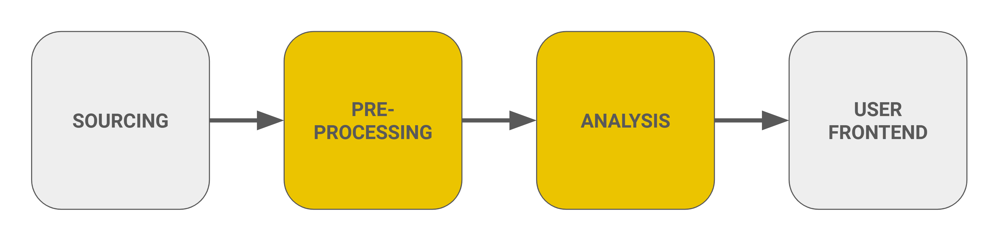

Step 2: Building the Prediction Pipeline
Overview
In this section, we will describe our data preprocessing and data cleaning steps, the data integration, feature selection and feature engineering, as well as our modeling approach and the selected models.

Description of the Data Preprocessing and Cleaning Steps
In our project, we utilized various data sources, including sensor data for visitor counts, weather data, visitor center data, and parking data. These datasets were initially in different formats, necessitating a thorough cleaning and preprocessing process to unify them.
Visitor Count Data Preprocessing
For the visitor count data, several crucial steps were taken:
-
Removing Unwanted Data: We excluded any data prior to "2016-05-10 03:00:00" since no sensors were installed before this date, ensuring our analysis focused on relevant data.
-
Fixing Column Names: The original dataset contained inconsistently named columns due to sensor replacements and renaming. We implemented a mapping process to unify sensor names, allowing us to aggregate readings under single names. For example, 'Bucina PYRO IN' and 'Bucina_Multi IN' were combined into 'Bucina MERGED IN'.
-
Correcting and Imputing Timestamps: We adjusted timestamps to account for daylight saving time changes, ensuring the integrity of our time series data. Missing values were filled in from subsequent rows to maintain continuity.
-
Handling Non-Replaced Sensors: Columns representing non-replaced sensors were set to NaN for values recorded before their replacement dates, as they no longer provided valid data.
-
Correcting Overlapping Sensor Data: In cases where both old and new sensors reported data during overlapping periods, we set values to NaN for old sensors after their replacement dates to avoid skewing our analysis.
-
Merging Columns: We merged columns based on predefined mappings to create simplified combined columns, such as 'Bucina MERGED IN'. This step eliminated redundancy and ensured a focus on relevant data.
-
Outlier Handling: Any visitor count exceeding 800 was transformed to NaN, as these values were deemed outliers and not representative of typical sensor readings.
-
Calculating Traffic Metrics: We derived key traffic metrics, including:
traffic_abs: Total counts (in + out) from all sensors.sum_IN_absandsum_OUT_abs: Sums of incoming and outgoing counts.occupancy_abs: A cumulative measure representing occupancy over time, aiding in trend analysis.
Weather Data Preprocessing
The weather data was sourced and preprocessed to ensure consistency and reliability for our analysis. The following key steps were taken:
-
Data Sourcing:
- We retrieved hourly weather data from the Meteostat API for the Bavarian Forest region from January 1, 2016, to September 3, 2024. This involved setting geographical coordinates to target the specific area.
-
Cleaning and Formatting:
- Unnecessary columns such as dew point, snow, wind direction, and others were removed to simplify the dataset.
- The remaining columns were renamed for clarity, transforming them into more descriptive titles like 'Temperature (°C)', 'Precipitation (mm)', and 'Relative Humidity (%)'.
- The 'Time' column was converted into a proper datetime format for seamless time series analysis.
-
Imputation of Missing Values:
- We implemented a function to fill missing values using linear interpolation, ensuring that gaps in the data were appropriately addressed. If a significant percentage of zero values (over 60%) was detected in any parameter, we opted to fill missing entries with zero.
- This approach helped maintain the integrity of the dataset while providing a more accurate representation of weather conditions.
-
Data Storage:
- The processed weather data was saved to an AWS S3 bucket, facilitating easy access and retrieval for subsequent analyses.
By carefully processing the weather data, we ensured it was well-prepared for integration with visitor count data and other datasets in our predictive modeling pipeline.
Visitor Center Data Preprocessing
The uncleaned administrative file, “national-park-vacation-times-houses-opening- times.xlsx,” was loaded for cleaning. First, the data types of each column were adjusted to their appropriate types for modeling at a later stage. For instance, columns with true/false values were converted to 0s and 1s, then transformed to ‘category’ type.
Next, additional columns for temporal features were created. This included generating columns for the month, day, and year using the date index, updating the day of the week (Wochentag) column to fill in missing values, and creating columns to indicate whether the day falls on a weekend (Wochenende) and the season (Jahreszeit).
After additional variables were created, each column was scanned for clerical errors from manual data entry. During this process, a duplicate date was identified and corrected (two instances of 9/29/2021 in the Datum column, with one changed to 9/29/2023). The school holiday binary variable (Schulferien_Bayern) had a value of ‘10,’ which was changed to ‘0’ after verifying the date of this holiday.
Similarly, the WGM_geoffnet binary variable (indicating whether the visitor center was open or closed) had a value of ‘11,’ which was adjusted to 1. Some visitor counts in the Besuchszahlen_HEH column contained decimals after a certain date, and these counts were rounded up to the nearest whole number. Extreme outliers were addressed by identifying visitor counts at the centers that were +/- 7 standard deviations from the column mean, which were replaced with NaN values. Finally, the very last row was removed from the data frame, as the row only contained missing values.
Two cleaned versions of the visitor center data were then saved—one at the daily level and another at the hourly level. The hourly-level visitor center data was eventually joined with other datasets that had temporal granularity at the hourly level for modeling.
Data Integration
We joined the preprocessed datasets—visitor counts, weather, and visitor center data—based on their timestamps to create a unified dataset for efficient modeling. This integration ensures that all data points align in hourly format, facilitating a comprehensive analysis of visitor traffic patterns.
The resulting joined dataset encompasses all relevant features from each source, providing a robust foundation for our predictive modeling efforts. This approach allows us to leverage the combined insights from different datasets, enhancing the accuracy and effectiveness of our forecasts.
Feature Selection and Feature Engineering
After joining the data, we conducted various tasks, including feature selection and feature engineering. Below are the relevant aspects of this process:
Region-wise Mapping
The Bavarian Forest National Park is divided into six regions, and we grouped the sensors accordingly. For each region, we aggregated the IN and OUT values based on the specific sensors that belong to that region:
Falkenstein-Schwellhäusl
Sensors: Bayerisch Eisenstein, Brechhäuslau, Deffernik, Ferdinandsthal, SchillerstraßeNationalparkzentrum Falkenstein
Sensors: Falkenstein 1, Falkenstein 2Scheuereck-Schachten-Trinkwassertalsperre
Sensors: Gsenget, Scheuereck, TrinkwassertalsperreLusen-Mauth-Finsterau
Sensors: Bucina, Felswandergebiet, Fredenbrücke, Schwarzbachbrücke, Waldhausreibe, Wistlberg, SagwassersägeRachel-Spiegelau
Sensors: Diensthüttenstraße, Gfäll, Klingenbrunner Wald, Klosterfilz, Racheldiensthütte, WaldspielgeländeNationalparkzentrum Lusen
Sensors: Lusen 1, Lusen 2, Lusen 3
The readings from these sensors were combined to provide the total IN and OUT values for the region.
Feature Engineering
We integrated additional features, including:
- Z-scores for daily maximum temperature, relative humidity, and wind speed.
- Distance to the nearest holidays for both Bayern and Czech Republic.
Data Transformation
Handling Numerical, Cyclic, and Categorical Features
-
Cyclic Features: We transformed cyclical features (e.g., hour, day) using sine and cosine transformations to maintain the cyclic nature.
-
Numerical Features: Z-score normalization was applied to standardize numerical features, ensuring they have a mean of 0 and a standard deviation of 1.
-
Categorical Features: Categorical columns were converted to string types for proper processing and analysis.
Additional Steps
- Datetime Conversion: The 'Time' column was converted to a datetime format for easier time-based indexing and analysis.
- Summation of IN and OUT Values: We summed the IN and OUT values for each region based on the defined mappings.
- Data Type Changes: Data types were adjusted according to predefined specifications to ensure consistency and optimize performance.
This systematic approach to preprocessing and feature engineering sets a solid foundation for subsequent modeling and analysis.
Modeling
We have sliced the data from January 1, 2023, to July 22, 2024, for training purposes. During our experimentation phase, we explored various forecasting models to identify the most effective approach for predicting visitor traffic in the Bavarian Forest National Park. Ultimately, the ExtraTree Regressor and LSTM (Long Short-Term Memory) models demonstrated superior performance compared to other models.
ExtraTree Regressor
The ExtraTree Regressor (Extremely Randomized Trees) is a powerful ensemble learning algorithm that constructs multiple decision trees during training. Unlike traditional decision trees, where splits are chosen based on the best criteria, Extra Trees randomly select cut points in the features. This approach often reduces variance without significantly increasing bias, making Extra Trees particularly well-suited for datasets with complex patterns and large feature spaces.
Why ExtraTree Regressor is Ideal for Our Use Case
-
Robustness to Overfitting: Due to the random nature of tree splits, ExtraTree Regressor is less likely to overfit the training data, especially in cases where the data has high dimensionality or contains noise.
-
Efficiency: ExtraTree Regressor requires less computational effort compared to other ensemble methods like Random Forests, making it an efficient choice for large-scale data.
-
Interpretability: While still complex, the decision-tree-based structure of the ExtraTree Regressor provides a level of interpretability, allowing us to understand which features contribute most significantly to the model’s predictions.
-
Handling of Various Feature Types: The model can handle both numerical and categorical features, which is crucial for our dataset, containing a mix of these feature types.
Model Implementation
Data Preparation: The data is split into training (January 1, 2023, to April 30, 2024) and testing (May 1, 2024, to July 22, 2024) sets based on specific date ranges, ensuring the temporal structure of the data is preserved.
Model Setup: PyCaret is used for setting up the model, where we define numeric and categorical features, ensure no data shuffling, and use 90% of the data for training with a 5-fold cross-validation.
Model Training: The Extra Trees Regressor is trained on the defined training set, and predictions are made on the test set to evaluate performance.
Model Saving: The trained models are saved for each target variable, ensuring reproducibility and facilitating later use in inference tasks.
This approach allowed us to capture the complexities in the data and produce reliable forecasts for visitor traffic in the Bavarian Forest National Park.
LSTM (Long Short-Term Memory)
Long Short-Term Memory (LSTM) networks are a type of recurrent neural network (RNN) specifically designed to model sequential data and capture long-term dependencies. LSTMs are highly effective for time series forecasting due to their ability to retain information over extended periods, which is crucial for predicting visitor traffic based on past patterns.
Why LSTM is Ideal for Our Use Case
-
Handling Sequential Data: LSTMs are designed to process sequences of data, which is critical for our task of predicting future visitor counts based on historical patterns.
-
Capturing Long-Term Dependencies: The LSTM architecture effectively captures long-term dependencies, which is crucial for understanding visitor trends that may span over days or weeks.
-
Flexibility in Architecture: LSTMs allow for various architectural adjustments (e.g., bidirectional layers, stacking) that enable the model to capture more complex visitor traffic patterns.
-
Robustness to Temporal Patterns: LSTMs are capable of learning and adapting to the temporal structure of the data, making them ideal for forecasting tasks where the order and timing of data points are important.
Model Implementation
Sequence Creation: To train the LSTM, the data is prepared by creating sequences. Each sequence represents a window of 168 hours (7 days). This approach ensures that the model is trained on weekly patterns, which are crucial for accurate forecasting.
- Training Sequences: The training data is split into sequences of 168 hours, with each sequence used to predict the following hour. This ensures that the model learns from both short-term fluctuations and longer-term trends.
Model Architecture: The LSTM model architecture is designed to capture complex temporal patterns in the data. Key components of the architecture include:
-
Bidirectional LSTM Layers: These layers process the sequence data in both forward and backward directions, allowing the model to learn from both past and future contexts within each sequence.
-
Dropout Layers: Dropout layers are included to prevent overfitting by randomly dropping units during training, encouraging the model to learn more robust features.
-
Dense Layer: The final Dense layer outputs predictions for the target variable, leveraging the features learned by the preceding LSTM layers.
Training and Evaluation: The LSTM model is trained on the prepared sequences with a validation split to monitor performance. Early stopping is implemented to prevent overfitting, stopping the training if the validation loss does not improve for several consecutive epochs.
-
Optimizer: The Adam optimizer is used, which is effective for handling the complexity of LSTM networks.
-
Loss Function: The Mean Squared Error (MSE) loss function is employed to minimize large errors by focusing on the difference between predicted and actual values.
-
Early Stopping: This technique monitors validation loss and restores the best weights if overfitting is detected.
Model Saving: After training, the model is saved for each target variable. This ensures that the trained models can be reused for inference and further fine-tuning, making the forecasting process more efficient and scalable.
The LSTM model, with its ability to model complex sequential data, has proven to be a powerful tool in our visitor traffic forecasting pipeline, particularly for capturing the temporal dynamics of visitor flows across different regions of the Bavarian Forest National Park.
Model Selection for Real-Time Inference
After experimenting with both the LSTM and Extra Tree Regressor models, we found that both performed admirably in terms of forecasting visitor traffic. However, our final choice of model for real-time inference was influenced by several key factors:
-
Limited Dataset Size: Given the relatively small size of our dataset, we needed a model that could deliver reliable performance without requiring large amounts of data. While LSTM models are powerful for capturing complex temporal dependencies, they often require larger datasets to fully realize their potential.
-
Model Simplicity and Interpretability: The Extra Tree Regressor, being an ensemble learning method based on decision trees, offers a straightforward and interpretable approach to forecasting. Its simplicity means that it is less prone to overfitting on smaller datasets and provides easily understandable results, which is advantageous for real-time applications where quick insights are needed.
-
Computational Efficiency: In real-time inference scenarios, the computational cost and speed of model predictions are critical. The Extra Tree Regressor is computationally efficient compared to LSTM models, which can be resource-intensive due to their sequential nature and complex architecture. This efficiency makes the Extra Tree Regressor a more suitable choice for deploying in a real-time environment where low latency is essential.
-
Robustness to Overfitting: With fewer data points, there is a higher risk of overfitting, especially with more complex models like LSTM. The Extra Tree Regressor, with its inherent randomness and use of multiple decision trees, is more robust against overfitting, ensuring that the model generalizes better on unseen data.
-
Scalability for Future Datasets: As more data becomes available over time, the simplicity of the Extra Tree Regressor allows for easier retraining and updating of the model. This scalability is critical as the system evolves and more historical data is collected.
-
Consistency in Performance: During our model evaluation, the Extra Tree Regressor consistently delivered strong performance across various metrics, making it a reliable choice for ongoing operations.
Based on these considerations, we selected the Extra Tree Regressor as the model for real-time inference. This decision balances the need for accurate predictions with the practical constraints of our current dataset and computational resources, ensuring that we can provide reliable visitor traffic forecasts in the Bavarian Forest National Park.